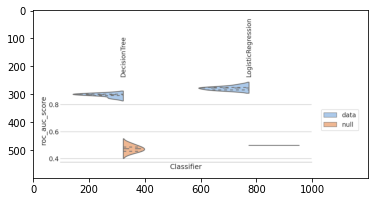
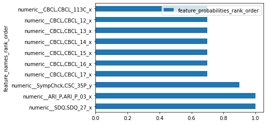
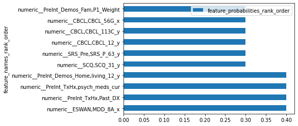

import pandas as pd
import os
import matplotlib.pyplot as plt
from hbn.constants import Defaults# load model data
MODEL_DIR = os.path.join(Defaults.MODEL_DIR, '2023-03-05_00-08-51-51S/model_410307956')
model_auc = plt.imread(os.path.join(MODEL_DIR, "out-localspec-20230305T162237.383579/test-roc_auc_score-20230305T162330.839932.png"))
df_feat = pd.read_csv(os.path.join(MODEL_DIR, 'classifier-feature_importance.csv'))plt.imshow(model_auc)<matplotlib.image.AxesImage at 0x7f093d5c7790>
df_decision_feat = df_feat[df_feat['clf'] == "DecisionTreeClassifier"]
df_logistic_feat = df_feat[df_feat['clf'] == "LogisticRegressionCV"]Top Features by Feature Importance for Decision Tree Classifier
df_decision_feat.nlargest(10, 'feature_probabilities_rank_order')| feature_names_rank_order | feature_probabilities_rank_order | feature_names_common | feature_probabilities_common | feature_sum | feature_names_sum | participants | model | clf | target | features | assessment | domains | measures | abbrevs | |
|---|---|---|---|---|---|---|---|---|---|---|---|---|---|---|---|
| 1 | numeric__SDQ,SDQ_27_x | 1.0 | numeric__SDQ,SDQ_27_x | 1.0 | 1.053863 | numeric__SDQ,SDQ_27_x | NDARAA075AMK-NDARAB653ZXP-NDARAL828WXM-NDARAM2... | 20230305T162237.383579 | DecisionTreeClassifier | DX_01_Cat_new_binarize | Parent Measures-all | Parent Measures | all | all | all |
| 3930 | numeric__ARI_P,ARI_P_03_x | 1.0 | numeric__ARI_P,ARI_P_03_x | 1.0 | 0.000000 | numeric__ARI_P,ARI_P_03_x | NDARAA075AMK-NDARAB653ZXP-NDARAL828WXM-NDARAM2... | 20230305T162237.383579 | DecisionTreeClassifier | DX_01_Cat_new_binarize | Parent Measures-all | Parent Measures | all | all | all |
| 0 | numeric__SympChck,CSC_35P_y | 0.9 | numeric__SympChck,CSC_35P_y | 0.9 | 5.893814 | numeric__SympChck,CSC_35P_y | NDARAA075AMK-NDARAB653ZXP-NDARAL828WXM-NDARAM2... | 20230305T162237.383579 | DecisionTreeClassifier | DX_01_Cat_new_binarize | Parent Measures-all | Parent Measures | all | all | all |
| 1271 | numeric__CBCL,CBCL_17_x | 0.7 | numeric__CBCL,CBCL_17_x | 0.7 | 0.000000 | numeric__CBCL,CBCL_27_y | NDARAA075AMK-NDARAB653ZXP-NDARAL828WXM-NDARAM2... | 20230305T162237.383579 | DecisionTreeClassifier | DX_01_Cat_new_binarize | Parent Measures-all | Parent Measures | all | all | all |
| 1272 | numeric__CBCL,CBCL_16_x | 0.7 | numeric__CBCL,CBCL_16_x | 0.7 | 0.000000 | numeric__CBCL,CBCL_26_y | NDARAA075AMK-NDARAB653ZXP-NDARAL828WXM-NDARAM2... | 20230305T162237.383579 | DecisionTreeClassifier | DX_01_Cat_new_binarize | Parent Measures-all | Parent Measures | all | all | all |
| 1273 | numeric__CBCL,CBCL_15_x | 0.7 | numeric__CBCL,CBCL_15_x | 0.7 | 0.000000 | numeric__CBCL,CBCL_25_y | NDARAA075AMK-NDARAB653ZXP-NDARAL828WXM-NDARAM2... | 20230305T162237.383579 | DecisionTreeClassifier | DX_01_Cat_new_binarize | Parent Measures-all | Parent Measures | all | all | all |
| 1274 | numeric__CBCL,CBCL_14_x | 0.7 | numeric__CBCL,CBCL_14_x | 0.7 | 0.000000 | numeric__CBCL,CBCL_24_y | NDARAA075AMK-NDARAB653ZXP-NDARAL828WXM-NDARAM2... | 20230305T162237.383579 | DecisionTreeClassifier | DX_01_Cat_new_binarize | Parent Measures-all | Parent Measures | all | all | all |
| 1275 | numeric__CBCL,CBCL_13_x | 0.7 | numeric__CBCL,CBCL_13_x | 0.7 | 0.000000 | numeric__CBCL,CBCL_23_y | NDARAA075AMK-NDARAB653ZXP-NDARAL828WXM-NDARAM2... | 20230305T162237.383579 | DecisionTreeClassifier | DX_01_Cat_new_binarize | Parent Measures-all | Parent Measures | all | all | all |
| 1276 | numeric__CBCL,CBCL_12_x | 0.7 | numeric__CBCL,CBCL_12_x | 0.7 | 0.000000 | numeric__CBCL,CBCL_22_y | NDARAA075AMK-NDARAB653ZXP-NDARAL828WXM-NDARAM2... | 20230305T162237.383579 | DecisionTreeClassifier | DX_01_Cat_new_binarize | Parent Measures-all | Parent Measures | all | all | all |
| 1277 | numeric__CBCL,CBCL_113C_x | 0.7 | numeric__CBCL,CBCL_113C_x | 0.7 | 0.000000 | numeric__CBCL,CBCL_21_y | NDARAA075AMK-NDARAB653ZXP-NDARAL828WXM-NDARAM2... | 20230305T162237.383579 | DecisionTreeClassifier | DX_01_Cat_new_binarize | Parent Measures-all | Parent Measures | all | all | all |
df_decision_feat.nlargest(10, 'feature_probabilities_rank_order').plot.barh(x = 'feature_names_rank_order', y = 'feature_probabilities_rank_order')<AxesSubplot:ylabel='feature_names_rank_order'>
Top Features by Feature Importance for Logistic Regression CV
df_logistic_feat.nlargest(10, 'feature_probabilities_rank_order')| feature_names_rank_order | feature_probabilities_rank_order | feature_names_common | feature_probabilities_common | feature_sum | feature_names_sum | participants | model | clf | target | features | assessment | domains | measures | abbrevs | |
|---|---|---|---|---|---|---|---|---|---|---|---|---|---|---|---|
| 3931 | numeric__ESWAN,MDD_8A_x | 0.4 | numeric__ESWAN,MDD_8A_x | 0.4 | 7.978700 | numeric__PreInt_TxHx,Past_DX | NDARAA075AMK-NDARAB653ZXP-NDARAL828WXM-NDARAM2... | 20230305T162237.383579 | LogisticRegressionCV | DX_01_Cat_new_binarize | Parent Measures-all | Parent Measures | all | all | all |
| 3932 | numeric__PreInt_TxHx,Past_DX | 0.4 | numeric__PreInt_TxHx,Past_DX | 0.4 | 7.283470 | numeric__ESWAN,MDD_8A_x | NDARAA075AMK-NDARAB653ZXP-NDARAL828WXM-NDARAM2... | 20230305T162237.383579 | LogisticRegressionCV | DX_01_Cat_new_binarize | Parent Measures-all | Parent Measures | all | all | all |
| 3934 | numeric__PreInt_TxHx,psych_meds_cur | 0.4 | numeric__PreInt_TxHx,psych_meds_cur | 0.4 | 4.912422 | numeric__SDQ,SDQ_15_x | NDARAA075AMK-NDARAB653ZXP-NDARAL828WXM-NDARAM2... | 20230305T162237.383579 | LogisticRegressionCV | DX_01_Cat_new_binarize | Parent Measures-all | Parent Measures | all | all | all |
| 7860 | numeric__PreInt_Demos_Home,living_12_y | 0.4 | numeric__PreInt_Demos_Home,living_12_y | 0.4 | -8.063588 | numeric__SympChck,CSC_55fC_y | NDARAA075AMK-NDARAB653ZXP-NDARAL828WXM-NDARAM2... | 20230305T162237.383579 | LogisticRegressionCV | DX_01_Cat_new_binarize | Parent Measures-all | Parent Measures | all | all | all |
| 3937 | numeric__SCQ,SCQ_31_y | 0.3 | numeric__SCQ,SCQ_31_y | 0.3 | 3.852732 | numeric__SDQ,SDQ_26_x | NDARAA075AMK-NDARAB653ZXP-NDARAL828WXM-NDARAM2... | 20230305T162237.383579 | LogisticRegressionCV | DX_01_Cat_new_binarize | Parent Measures-all | Parent Measures | all | all | all |
| 4718 | numeric__SRS_Pre,SRS_P_63_y | 0.3 | numeric__SRS_Pre,SRS_P_63_y | 0.3 | 0.020622 | numeric__CBCL,CBCL_Ext_T_y | NDARAA075AMK-NDARAB653ZXP-NDARAL828WXM-NDARAM2... | 20230305T162237.383579 | LogisticRegressionCV | DX_01_Cat_new_binarize | Parent Measures-all | Parent Measures | all | all | all |
| 5174 | numeric__CBCL,CBCL_12_y | 0.3 | numeric__CBCL,CBCL_12_y | 0.3 | 0.000000 | numeric__SCARED_P,SCARED_P_25_x | NDARAA075AMK-NDARAB653ZXP-NDARAL828WXM-NDARAM2... | 20230305T162237.383579 | LogisticRegressionCV | DX_01_Cat_new_binarize | Parent Measures-all | Parent Measures | all | all | all |
| 5175 | numeric__CBCL,CBCL_113C_y | 0.3 | numeric__CBCL,CBCL_113C_y | 0.3 | 0.000000 | numeric__SRS,SRS_12_x | NDARAA075AMK-NDARAB653ZXP-NDARAL828WXM-NDARAM2... | 20230305T162237.383579 | LogisticRegressionCV | DX_01_Cat_new_binarize | Parent Measures-all | Parent Measures | all | all | all |
| 5458 | numeric__CBCL,CBCL_56G_x | 0.3 | numeric__CBCL,CBCL_56G_x | 0.3 | 0.000000 | numeric__Barratt,Barratt_P1_Occ_y | NDARAA075AMK-NDARAB653ZXP-NDARAL828WXM-NDARAM2... | 20230305T162237.383579 | LogisticRegressionCV | DX_01_Cat_new_binarize | Parent Measures-all | Parent Measures | all | all | all |
| 6007 | numeric__PreInt_Demos_Fam,P1_Weight | 0.3 | numeric__PreInt_Demos_Fam,P1_Weight | 0.3 | 0.000000 | numeric__NLES_P,NLES_P_13b_y | NDARAA075AMK-NDARAB653ZXP-NDARAL828WXM-NDARAM2... | 20230305T162237.383579 | LogisticRegressionCV | DX_01_Cat_new_binarize | Parent Measures-all | Parent Measures | all | all | all |
df_logistic_feat.nlargest(10, 'feature_probabilities_rank_order').plot.barh(x = 'feature_names_rank_order', y = 'feature_probabilities_rank_order')<AxesSubplot:ylabel='feature_names_rank_order'>